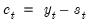
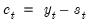
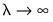
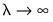

To begin, open the database windows by selecting File/Open Database from the primary EViews menu, select from the
Database/File type drop down menu,
Click on to proceed and open the data browser
Alternately, you may use the Filter edit box to input a keyword, enabling a search across all categories and datasets.
You may use the filter page to refine your search. See “Selecting Series” for additional detail. Once you have the data series desired, you may click on to download the data into an EViews workfile.
To access the NOAA database, choose File/Open Database from the main EViews menu, and then select from the
Database/File type drop down menu.
Enter your API key and click OK. The key will be saved as a user specific setting in your EViews “.ini” file. If you need to change the key later, select
View/Preferences from the EViews database menu to modify your settings.
When you click on OK, EViews will open a standard database window.
Click on Browse to open the custom NOAA window:
You may then choose to Fi by clicking on the button to select one or more locations from a list, or you elect to
Load from Stations by clicking on the button to specify stations using Station IDs.
If you choose click on the button to
Fi, a dialog will be displayed to walk you through the selection process:
If you selected multiple locations in the location step, a EViews will display a dialog with two tabs: a Shared tab showing data types common to all of the locations, and an
All Available tab listing all available data types across all of the locations.
Use the Filter edit field and button to refine your search in the lists on both tabs, select the data types of interest, and click
Next to view the available NOAA stations.
Click on to continue and display the main NOAA dialog:
You will see in the Selection table the data you have just selected from your search. You can directly export these data to a workfile or find additional data before proceeding with the export.
If you select Load Stations, instead of
Find by Location, the displayed dialog will contain a textbox where you can manually type or paste from the clipboard the station IDs from which you want to retrieve data:
Select the desired data types and click Next to display the next dialog where you will to select station and data type combinations:
Click on Select to continue to the final dialog where you will choose the date range:
Click on to continue and display the main NOAA dialog:
Click the Export to WorkFile button to export the chosen data to either an existing or a new workfile.
To begin, open the database windows by selecting File/Open Database from the primary EViews menu, select the desired SDMX database from the
Database/File type drop down menu,
and click on OK to continue.
Click on Browse or
Browse-Append to open the database.
Alternatively, you can use the Filter edit box to input a keyword, enabling a search across all categories and datasets.
You can type a keyword in the Filter edit field to find a dataset. Select the dataset and click
Next to continue.
Here we use the to require data to be calendar and seasonally adjusted data:
Once the filter definition for the category is complete, click Save to save the filter settings and return the main selection dialog.
Once you finish defining any selection filters, click on the button to load a list of the relevant series in the dataset:
Finally, you may select one or more series in the list, then click on the Export to workfile button to load the selected series into a new or existing workfile.
Note that the Refresh Data button in the upper-right corner may be used to ensure the database information is up-to-date. For some databases, there will also be an
Open in Browser button which will take you to the selected dataset on the database website if available. This feature is applicable only to those databases that offer an online data browser.
To perform JDemetra+ seasonal adjustment in EViews, click on Proc/Seasonal Adjustment/JDemetra+... from the series window menu in a monthly or quarterly workfile. This will open the JDemetra+ tabbed dialog:
The first tab, Base specification allows you to choose one of the JDemetra+ preset specifications, as well as selecting which series to output into the workfile, and optionally specifying a suffix to be used in naming the output series.
|
•
|
The X-13 spec: drop down menu specifies the preset specification. JDemetra+ offers a number of specifications with settings for the pre-treatment and decomposition steps of the seasonal adjustment:
|
|
•
|
The Mode: dropdown specifies the X-11 decomposition mode that will be used. JDemetra+ only allows the user to specify the decomposition mode if no pre-adjustment is being performed, so this dropdown is only enabled when the X-11 default specification is selected.
|
|
•
|
The Series output section specifies which of the output series from JDemetra+ will be exported to the workfile. By default, each output series will be created a name equal to that of the underlying series plus the type of series being created ( e.g., if JDemetra+ is run on the series GDP, then the seasonally adjusted D11 series will be created with a name of GDP_D11). You can use the Naming suffix edit field to enter an additional suffix that will be appended to the series name before the output type ( e.g., if you enter “_JD” as the Naming suffix then the D11 series for GDP will be created with a name of GDP_JD_D11).
|
The Regression tab of the dialog allows you to override some of the options set by the default specifications relating to the pre-adjustment regression step of X-13 style seasonal adjustment.
Selecting the X-13 specification on the Base specification tab will change the settings on this tab, but you can fine tune the default settings by using the options on this tab.
|
•
|
The Transformation drop down menu specifies whether a log transformation should be applied to the underlying series before running the regression. Auto (Log/none) instructs JDemetra+ to automatically detect whether a log transform should be applied or not.
|
|
•
|
The Check for outliers check box specifies whether JDemetra+ should automatically detect outliers. EViews' implementation of JDemetra+ supports only the Additive Outlier (AO), Level Shift (LS), and Temporary Change (TC) types of outliers, and when the option is checked, JDemetra+ will detect for all three types simultaneously.
|
|
•
|
Trading days sets the type of calendar effects used in the pre-adjustment regression. These effects consist of created variables with the count of the number of days in each period. The options are:
|
If User variables is selected as the trading day type, you must specify series to use as calendar variables on the
User Regressors tab.
|
•
|
The Include Leap Year adjustment and Include Easter checkboxes control whether additional adjustments are made to the calendar effects for the impact of leap years and Easter. The Auto-adjust checkbox specifies whether JDemetra will automatically determine whether to drop the leap-year adjustment.
|
The ARIMA tab provides options for the estimation of the ARIMA model in the pre-adjustment step:
|
•
|
The ARIMA Method section selects the method used to specify the ARIMA model to be estimated. None instructs JDemetra+ to not estimate an ARIMA model at all.
|
If Manual is selected, you can enter a specific ARIMA order in (
p, d, q)(
P, D, Q) notation, where
p is the AR order,
d is the differencing level,
q is the MA order,
P is the seasonal AR order,
D is the seasonal differencing level, and
Q is the seasonal MA order.
If X-11 Auto is selected, JDemetra+ will use its default X-11 selection routine to select the most appropriate ARIMA order.
|
•
|
The Forecast ARIMA model checkbox instructs JDemetra+ to forecast the ARIMA model beyond the end of the series. The number of periods forecasted can be changed using the Forecast length edit field. Forecasting the ARIMA model allows JDemetra+ to provide forecasts of the final seasonally adjusted series and seasonal factors. Note forecasts will only be imported into EViews if the workfile range covers the period of the forecast.
|
The User Regressors tab of the dialog supports providing user-provided exogenous series to the pre-adjustment ARIMA/regression models.
Clicking on the Add button brings up a dialog asking you to type in the name of the workfile variable that you would like to include as a regressor:
The drop down menu should be used to specify a regressor type for the variable you are including (
i.e., , , , etc.). Changing the type of the regressors changes the exact impact that series has on the final seasonal adjustment calculation. The JDemetra+ documentation has details on the exact calculations.
If you selected User Variables as the
Trading Days type, you must add at least one user-regressor with a type of
Calendar/TradingDay.
Simple X-11 adjustment is one of the pre-set JDemetra+ defaults, so we change the X-13 spec: dropdown to
X-11. We'll elect to store the seasonally adjusted values in the workfile, and enter “_x11” in the edit field:
Clicking to display the JDemetra+ graph output:
Phillips and Shi (2020) have proposed iterating the HP filter to produce a “smarter smoothing device.” This boosted HP filter takes the cyclical series,

and runs the filter on it one more time to produce a new smoothed and cycle series. The filtering process is repeated, producing a further smoothed series at each iteration. The advantage of this iterative procedure is that the final smoothed series is less reliant on the choice of

. Phillips and Shi recommend repeating the process either after a set number of iterations, or through the use of information criteria to decide the optimal number of iterations.
First, provide a name for the . EViews will suggest a name, but you can always enter a name of your choosing. If you wish to save a , specify a name in the edit field.
Next, specify an integer value for the smoothing parameter,  . You may specify
. You may specify  directly by clicking on the
directly by clicking on the radio button and entering a value in the edit field, or you may specify a value using the frequency power rule of Ravn and Uhlig (2002) (the number of periods per year divided by 4, raised to a power, and multiplied by 1600 by clicking on the and entering a value in the edit field.
The Boosting section of the dialog offers settings for iterative boosting of the HP filter. You may choose between stopping based on the maximum number of iterations or using an Information criteria.
If you click on , EViews will stop based on the entry in the
Max. Iterations edit field. By default, there will be no boosting as only one iteration of the filter will be performed.
Selecting the Information criteria radio button instructs EViews to select the optimal number of iterations using information criteria. The
Max. Iterations edit field should be used to specify the number of iterations to be considered.
When you click on OK, EViews displays a graph of the filtered series together with the original series. Note that only data in the current workfile sample are filtered. Observations for the smoothed and cyclical series outside the current sample will be filled with NAs.


 of
of  by minimizing the variance of
by minimizing the variance of  around
around  , subject to a penalty that constrains the second difference of
, subject to a penalty that constrains the second difference of  . The HP filter chooses the values of
. The HP filter chooses the values of  to minimize:
to minimize: series is often referred to as the trend series. The cyclical component
series is often referred to as the trend series. The cyclical component  of the original series can be computed as .
of the original series can be computed as . controls the smoothness of
controls the smoothness of  . The larger the
. The larger the  , the smoother the
, the smoother the  . As ,
. As ,  approaches a linear trend.
approaches a linear trend. :
: